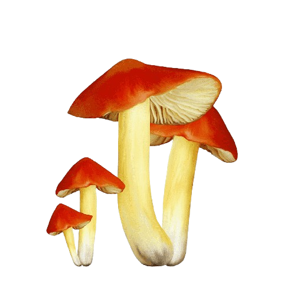
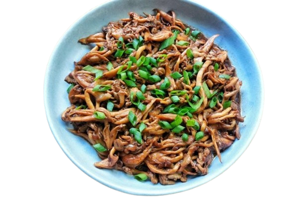
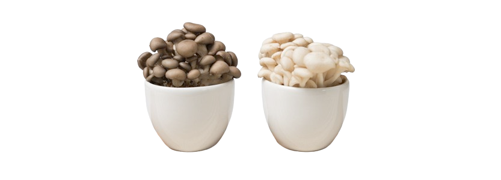

O cogumelo shimeji surgiu naturalmente na Ásia, especialmente no Japão, China e Coreia, e é amplamente utilizado na culinária asiática devido ao seu sabor único e textura delicada. A história do seu cultivo e consumo é longa, com registros indicando que os cogumelos foram um dos primeiros alimentos colhidos pelos povos pré-históricos. O shimeji é um cogumelo comestível, popular na culinária oriental, que se divide em duas variedades principais: o shimeji branco e o shimeji preto (ou preto/cinza). Ambos são versáteis e podem ser utilizados em diversas receitas, como massas, arroz, carnes, peixes e frutos do mar. Além disso, o shimeji é rico em nutrientes, como proteínas, fibras e minerais, e possui benefícios para a saúde, como a promoção de uma flora intestinal equilibrada e a prevenção da constipação.
Benefícios: O shimeji é rico em antioxidantes, que ajudam a combater radicais livres e reduzir o risco de doenças como câncer e doenças cardíacas. Melhora da saúde digestiva: A fibra presente no shimeji auxilia na regularização do intestino e na prevenção de problemas como prisão de ventre e diarreia. Fortalecimento do sistema imunológico: A vitamina B12 e outros nutrientes no shimeji contribuem para a produção de glóbulos brancos, que são essenciais para combater infecções. Redução do risco de diabetes: O shimeji pode ajudar a controlar os níveis de açúcar no sangue, reduzindo o risco de desenvolver diabetes. Fonte de nutrientes: O shimeji é rico em proteínas, fibras, vitaminas (B12, B2, B3, B5) e minerais (ferro, potássio, zinco, fósforo, selênio), que são importantes para a saúde. Auxílio na saciedade: A fibra do shimeji contribui para a sensação de saciedade, auxiliando no controle do apetite e na perda de peso. Possíveis malefícios: Problemas digestivos: O consumo excessivo de fibra pode causar desconforto abdominal, gases e diarreia em algumas pessoas. Reações alérgicas: Algumas pessoas podem ser alérgicas ao shimeji, com sintomas como coceira, vermelhidão e inchaço na pele. Interações medicamentosas: O shimeji pode interagir com alguns medicamentos, como anticoagulantes e anti-inflamatórios. Contaminação: É importante garantir que o shimeji seja fresco e bem armazenado para evitar contaminação por bactérias e fungos. Problemas com a tireoide: O shimeji pode conter compostos que podem interferir na absorção de iodo, o que pode ser problemático para pessoas com problemas de tireoide.
A RECEITA: Nos restaurantes japoneses, a receita costuma ser preparada direto numa chapa bem quente, mas em casa a saída é usar uma frigideira grande. Se ela for de ferro é melhor ainda, pois ele transmite bem o calor e dá um dourado delicioso pros cogumelos. É importante usar uma frigideira que acomode os cogumelos no máximo numas duas camadas e manter o fogo alto o tempo todo, se ela for pequena e o fogo ficar baixo, eles juntam água, endurecem e ficam cozidos, não caramelizam. O preparo é simples e rápido. Eu aqueço bem a frigideira e, sempre com o fogo bem alto, junto a manteiga e um fio de óleo, que pode ser milho, girassol, soja ou azeite de oliva pra manteiga não queimar. Então acrescento o alho e espero perfumar. Coloco os cogumelos e umas duas pitadas de sal na frigideira, mexo, esperar a água natural se soltar e secar rápido pra manter os talos macios. Depois acrescento o shoyu, espero ferver pra dar uma reduzida, acrescento o açúcar pra dar uma quebrada na intensidade do shoyu e brilhar, junto a cebolinha e sirvo na hora. Cebolinha tem tudo a ver com a receita de shimeji na manteiga com shoyu, mas dá pra usar uma mistura de cebolinha e salsinha, ou só salsinha ou coentro. Veganos podem deixar a manteiga de lado e usar azeite de oliva, que é saboroso, e regar com um fio de óleo de gergelim no final. Fica muito bom!. Como sempre acontece na cozinha, o sal é a gosto, depende do paladar de cada um e do jeito de cada casa. Como, na receita de hoje, o shoyu entra pra dar sabor, aroma e já deixa o shimeji com um tanto de sal, pode ser que nem de sal ele precise. Eu costumo colocar só umas duas pitadas de sal logo no início pra ajudar a liberar a água natural do shimeji e ele cozinhar de um jeito mais natural e ficar saboroso e com boa textura. No final, ajusto o sal. Além de ser uma entradinha saborosa, a receita de shimeji na manteiga vai bem com arroz branco de todo dia, com um grelhado ou com outros legumes. Dá pra fazer a mesma receita com shiitake fatiado fininho no lugar do shimeji ou fazer um mix dos dois. Super importante: teoricamente a receita não contém glúten, mas os intolerantes devem conferir a composição do shoyu, pois muitos deles têm glúten.
Diferenças entre o Shimeji Branco e o Preto: Sabor: O shimeji branco tem um sabor suave e levemente adocicado, enquanto o shimeji preto possui um sabor mais intenso e marcante. Textura: O shimeji branco é mais rústico e crocante, enquanto o shimeji preto é mais delicado e macio. Aroma: O shimeji preto possui um aroma mais acentuado do que o shimeji branco. Produção: O shimeji preto requer mais cuidados na produção e, consequentemente, é mais caro. Melhor para: Shimeji Branco: Ideal para saladas, sopas e pratos que pedem um toque mais suave. Shimeji Preto: Perfeito para receitas que valorizam sabores mais intensos, como pratos com shoyu e sake. Em resumo: O shimeji branco é mais versátil e adequado para pratos com sabores mais leves, enquanto o shimeji preto é mais indicado para receitas que precisam de um sabor mais intenso.